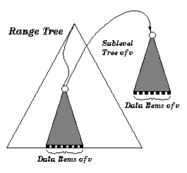
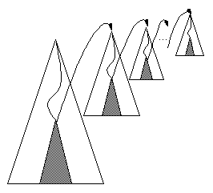
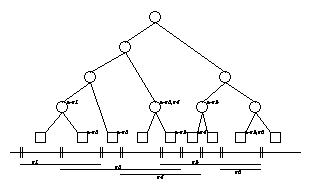
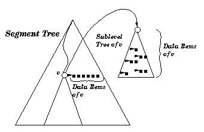

This chapter presents the CGAL range tree, segment tree, and -tree data structures. The range tree is theoretically superior to the -tree, but the latter often seems to perform better. However, the range tree as implemented in CGAL is more flexible than the -tree implementation, in that it enables to layer together range trees and segment trees in the same data structure.
First the range and segment trees are introduced in
sections  through
through  .
Then the -tree is presented in Sections
.
Then the -tree is presented in Sections  through
through
 .
.
A one-dimensional range tree is a binary search tree on one-dimensional point data. Here we call all one-dimensional data types having a strict ordering (like integer and double) point data. -dimensional point data are -tuples of one-dimensional point data.
A one-dimensional segment tree is a binary search tree as well, but with one-dimensional interval data as input data. One-dimensional interval data is a pair (i.e., 2-tuple) , where and are one-dimensional point data of the same type and . The pair represents a half open interval . Analogously, a -dimensional interval is represented by a -tuple of one-dimensional intervals.
The input data type for a -dimensional tree is a container class consisting of a -dimensional point data type, interval data type or a mixture of both, and optionally a value type, which can be used to store arbitrary data. E.g., the -dimensional bounding box of a -dimensional polygon may define the interval data of a -dimensional segment tree and the polygon itself can be stored as its value. An input data item is an instance of an input data type.
The range and segment tree classes are fully generic in the sense that they can be used to define multilayer trees. A multilayer tree of dimension (number of layers) is a simple tree in the -th layer, whereas the -th layer, , of the tree defines a tree where each (inner) vertex contains a multilayer tree of dimension . The -dimensional tree which is nested in the -dimensional tree () is called the sublayer tree (of ). For example, a -dim tree can be a range tree on the first layer, constructed with respect to the first dimension of -dimensional data items. On all the data items in each subtree, a -dimensional tree is built, either a range or a segment tree, with respect to the second dimension of the data items. And so on.
Figures here explain the meaning of a sublayer tree graphically.
After creation of the tree, further insertions or deletions of data items are disallowed. The tree class does neither depend on the type of data nor on the concrete physical representation of the data items. E.g., let a multilayer tree be a segment tree for which each vertex defines a range tree. We can choose the data items to consist of intervals of type double and the point data of type integer. As value type we can choose string.
For this generality we have to
define what the tree of each dimension looks like and how the
input data is organized.
For dimension , , CGAL provides ready-to-use
range and segment trees that can store k-dimensional keys
(intervals resp.). These classes are defined in
Section  (Section
(Section  resp.). These
classes are parameterized with a traits class that defines, among
other things, the key and interval type of a tree
(cf. Section
resp.). These
classes are parameterized with a traits class that defines, among
other things, the key and interval type of a tree
(cf. Section  ).
In Section
).
In Section  we give the requirements tree traits
classes must fulfill.
we give the requirements tree traits
classes must fulfill.
In case you want to create a combined tree structure,
refer Section  . The classes described in that section
enable you to define each layer of a tree
separately. These tree classes are templatized with the type of
the data item, the query interval and a traits class which is
used as an interface to the data. In Section
. The classes described in that section
enable you to define each layer of a tree
separately. These tree classes are templatized with the type of
the data item, the query interval and a traits class which is
used as an interface to the data. In Section  we
describe the ready-to-use traits CGAL
provides and the requirements a traits class has to fulfill. By
this, the advanced user can develop his own traits classes.
we
describe the ready-to-use traits CGAL
provides and the requirements a traits class has to fulfill. By
this, the advanced user can develop his own traits classes.
We now give a short definition of the version of the range tree and segment tree implemented here. The presentation closely follows [dBvKOS97].
A one-dimensional range tree is a binary search tree on one-dimensional point data. The point data of the tree is stored in the leaves. Each inner vertex stores the highest entry of its left subtree. The version of a range tree implemented here is static, which means that after construction of the tree, no elements be inserted or deleted. A -dimensional range tree is a binary leaf search tree according to the first dimension of the -dimensional point data, where each vertex contains a -dimensional search tree of the points in the subtree (sublayer tree) with respect to the second dimension. See [dBvKOS97] and [Sam90] for more detailed information.
A -dimensional range tree can be used to determine all -dimensional points that lie inside a given -dimensional interval (window_query).
The pictures below show a two-dimensional and a -dimensional range tree.
|  |  | |
| A two-dimensional range tree. The tree is a binary search tree on the first dimension. Each sublayer tree of a vertex is a binary search tree on the second dimension. The data items in a sublayer tree of are all data items of the subtree of | A d-dimensional range tree. For each layer of the tree, one sublayer tree is illustrated. | |
A segment tree is a static binary search tree for a given set of coordinates. The set of coordinates is defined by the endpoints of the input data intervals. Any two adjacent coordinates build an elementary interval. Every leaf corresponds to an elementary interval. Inner vertices correspond to the union of the subtree intervals of the vertex. Each vertex or leaf contains a sublayer type (or a list, if it is one-dimensional) that will contain all intervals , such that contains the interval of vertex but not the interval of the parent vertex of .
A -dimensional segment tree can be used to solve the following problems:
An example of a one-dimensional segment tree and an example of a two-dimensional segment tree is shown below.
|  |  | |
| A one-dimensional segment tree. The segments and the corresponding elementary intervals are shown below the tree. The arcs from the nodes point to their subsets. | A two-dimensional segment tree. The first layer of the tree is built according to the elementary intervals of the first dimension. Each sublayer tree of a vertex is a segment tree according to the second dimension of all data items of . | |
One possible application of a two-dimensional segment tree is the following. Given a set of convex polygons in two-dimensional space (CGAL_Polygon_2), we want to determine all polygons that intersect a given rectangular query window. Therefore, we define a two-dimensional segment tree, where the two-dimensional interval of a data item corresponds to the bounding box of a polygon and the value type corresponds to the polygon itself. The segment tree is created with a sequence of all data items, and a window query is performed. The polygons of the resulting data items are finally tested independently for intersections.
This section provides range tree and segment tree traits class implementations for the CGAL kernel.
The following traits classes are set-like, since no data is associated to the keys.
This section describes the requirements for range and segment tree traits classes.
Now let us have a closer look on how a multilayer tree is built. In case of creating a -dimensional tree, we handle a sequence of arbitrary data items, where each item defines a -dimensional interval, point or other object. The tree is constructed with an iterator over this structure. In the -th layer, the tree is built with respect to the data slot that defines the -th dimension. Therefore, we need to define which data slot corresponds to which dimension. In addition we want our tree to work with arbitrary data items. This requires an adaptor between the algorithm and the data item. This is resolved by the use of traits classes, implemented in form of a traits class using function objects. These classes provide access functions to a specified data slot of a data item. A -dimensional tree is then defined separately for each layer by defining a traits class for each layer.
Tree class Range_tree_d and class Segment_tree_d are templatized with a parameter CGAL_Traits. CGAL_Traits builds the interface between the tree and the data items. We now describe the traits class for a Range_tree_d layer and for a Segment_tree_d layer. The traits classes are implemented as template classes. If you do not want to use these traits classes you can also define your own class which has at least to provide the functionality of the traits class described below.
The tree classes were first intended to have a template argument defining the type of the sublayer tree. This leads to nested template arguments, where the internal class and function identifier got longer than a compiler dependent limit. Even for dimension 2 this happened. Therefore we chose another design. Now a tree is created with a prototype of the sublayer tree. With this prototype the sublayer tree can be cloned. The design pattern corresponds to the Prototype design pattern in [GHJV95].
In this sense, an instance of a
three-dimensional range tree (segment tree) would have to be
created as a range tree (segment tree) with creation variable
Sublayer_type s, which is a prototype of a two-dimensional
range tree (segment tree). Because a range tree of segment tree
is expecting a prototype for its creation, a recursion anchor which
builds dimension ``zero'' is needed.
CGAL_Tree_anchor described in
section  fulfills all these requirements.
All tree classes (range tree, segment tree, tree anchor) are
derived from an abstract base class
CGAL_Tree_base.
fulfills all these requirements.
All tree classes (range tree, segment tree, tree anchor) are
derived from an abstract base class
CGAL_Tree_base.
Additionally a range tree (segment tree) is build in function make_tree using iterators. The iterator concept is realized in the Standard Template Library and in many other libraries, see [MS96]. As long as the GNU, SUN and SGI compiler do not support template member functions, we only support member functions parameterized with iterators working on STL list, STL vector and C-arrays.
The trees are templatized with three arguments: Data, Window and Traits. Type Data defines
the input data type and type Window defines the query
window type.
The tree uses a well defined set of functions in
order to access data. These functions have to be provided by
class Traits. The requirements are described in
Section  .
.
Such a recursion anchor class is provided by the following class.
The implementation of the $KD$-tree is independent of the implementation of the rest of CGAL and can be used separately from CGAL.
The $KD$-tree class is parameterized with an interface class, that defines
the interface between the $KD$-tree and the geometric primitives used.
CGAL provides ready-made interface class that is presented in
Section  .
The formal requirements for a class to be a $KD$-tree interface class is
described in Section
.
The formal requirements for a class to be a $KD$-tree interface class is
described in Section  .
.
For a given set on points in , it is sometimes useful to be able to answer orthogonal range-searching on ; namely, given an axis parallel query box in , one would like to ``quickly'' determine the subset of points of lying inside .
Several data structures were suggested for that problem. Foremost among those, at least theoreticly, is the range-tree data structure with preprocessing time, space, and query time, where is the output size of the query.
A theoreticly inferior data structure is the $KD$-tree, which offers preprocessing time, space, and query time. The $KD$-tree is a binary tree constructed as follows: we compute the point of such that its first coordinate is the median value among , where denote the -th coordinate of the -th point of . Let denote all the points of with first coordinate smaller than 's first coordinate, and let . Let be the $KD$-trees constructed recursively for , respectively. The $KD$-tree of is simply the binary tree having as its left subtree and as its right subtree. We apply this algorithm recursively, splitting the sets in the -level of the $KD$-tree using the median point in the -th coordinate, where . See Figure [ref:KDT_fig:kdtree] for an illustration.
The resulting data structure has linear size, preprocessing time, and can answer a query in time, where is the size of the query output. See [dBvKOS97].

In this section we define the class CGAL_Kdtree_d that implements the CGAL $KD$-tree.
CGAL contains a default implementation for the $KD$-tree interface class. In this section we describe how to use it.
$KD$-tree implemented using the default interface may be applied to any standard class of point provided by CGAL.
The default interface class CGAL_Kdtree_Interface<Point> is templated with a parameter Point, which is required to supply the following methods:
There are two other default interface classes CGAL_Kdtree_Interface_2d<Point> and CGAL_Kdtree_Interface_3d<Point> which should be used when using 2D and 3D points from the CGAL kernel. This is done since the points in the kernel do not support changing their coordinates through direct access.
In this section we present the formal requirements for a $KD$-tree interface class, that can be used to instantiate a variable of type CGAL_Kdtree_d<I>.
The $KD$-tree class is parameterized with the
interface class I which defines the abstract interface
between the $KD$-tree and the data (i.e., points). The following
requirement catalog lists the primitives, i.e., types, member functions
etc., that must be defined for a class that can be used to
parameterize $KD$-trees. Ready-made implementation is available
and described in Section  .
.